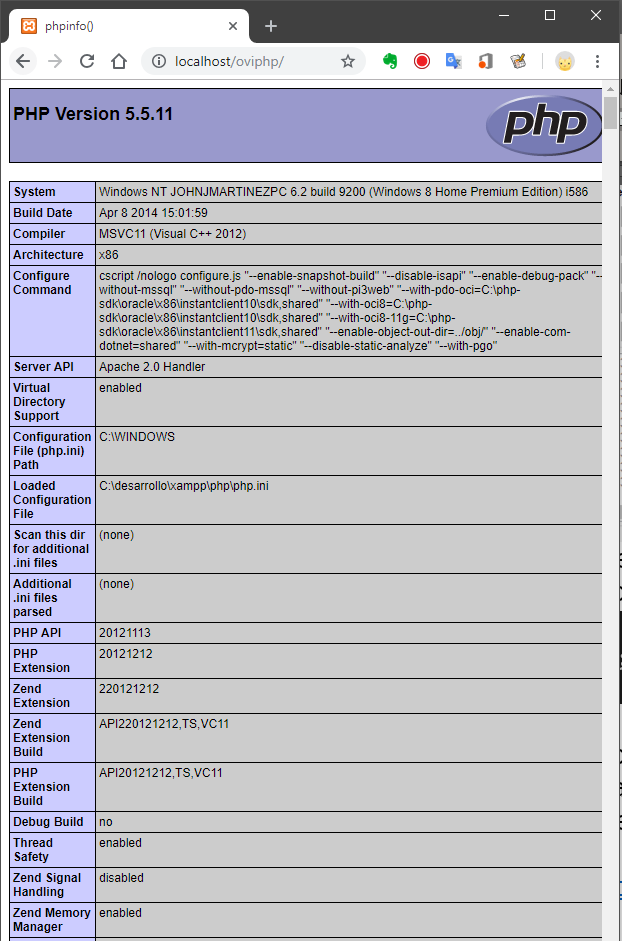
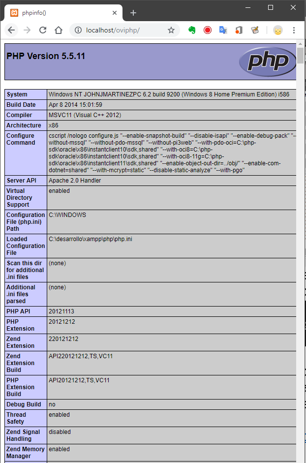

Mi avance...
- Para que sirve un servidor web
- Instalación del servidor web
- Verificación de la instalación php
- Conectar a la base de datos
- Conectar php a la base de datos
- Listar información
- Almacenar información
- Actualizar información
- Eliminar información
Un servidor web es un componente de software que permite la visualización de una
aplicación o contenido mediante el uso de un explorador de internet.
Para este caso, el servidor web nos servirá para generar una aplicación que pueda ser desarrollada en la herramienta php y posteriormente visualizada mediante el uso de un explorador de internet.
Para este caso, el servidor web nos servirá para generar una aplicación que pueda ser desarrollada en la herramienta php y posteriormente visualizada mediante el uso de un explorador de internet.
Un servidor Web muy conocido y de distribución gratuita es Apache Web Server https://httpd.apache.org/.
Este servidor ha sido creado por la comunidad de software
libre y ha sido mantenido y mejorado durante muchos años. Este servidor web tiene
soporte para múltiples tecnologías, incluyendo la que vamos a usar, Php.
Para realizar una instalación sin complicaciones, se debe acceder a una herramienta que tenga todo lo que necesitamos en un mismo instalador. Para este caso, contamos con diferentes herramientas todas muy eficientes y fáciles de utilizar como por ejemplo: Xampp, Wamp, Bitnami, Mamp, entre otras.
Para este caso usaremos Xampp el cual contiene las herramientas necesarias para realizar nuestra actividad (Apache, Php, MariaDB (MySQL)) y adicional a ello contiene una aplicación que permite administrar y configurar fácilmente las aplicaciones instaladas.
Video de como instalar Xampp:
Para realizar una instalación sin complicaciones, se debe acceder a una herramienta que tenga todo lo que necesitamos en un mismo instalador. Para este caso, contamos con diferentes herramientas todas muy eficientes y fáciles de utilizar como por ejemplo: Xampp, Wamp, Bitnami, Mamp, entre otras.
Para este caso usaremos Xampp el cual contiene las herramientas necesarias para realizar nuestra actividad (Apache, Php, MariaDB (MySQL)) y adicional a ello contiene una aplicación que permite administrar y configurar fácilmente las aplicaciones instaladas.
Video de como instalar Xampp:
Antes de iniciar la verificación, por favor ejecute el servidor Xampp.
Se debe crear un archivo llamado index.php, en el cual se debe colocar el siguiente código:
Dentro de la raíz web se debe crear una carpeta con el objetivo de organizar mejor la información.
Se debe abrir el navegador de Internet colocando la ruta localhost y la carpeta que se creó en el punto anterior, ejemplo:
http://localhost/oviphp/
Al abrir la página se debe visualizar de la siguiente manera:

Apoyo complementario
Se debe crear un archivo llamado index.php, en el cual se debe colocar el siguiente código:
<? echo phpinfo(); ?>El archivo creado se debe dejar en la carpeta que Xampp destinó como raíz del sitio web.
Dentro de la raíz web se debe crear una carpeta con el objetivo de organizar mejor la información.
Se debe abrir el navegador de Internet colocando la ruta localhost y la carpeta que se creó en el punto anterior, ejemplo:
http://localhost/oviphp/
Al abrir la página se debe visualizar de la siguiente manera:

Apoyo complementario

Nombre del Ovi:
Vinculación de BD a una página con PHPObjetivo general:
Aprender a utilizar php para realizar conexiones a la base de datos MySQL y realizar las operaciones básicas con datos; Inserción, Consulta, Actualización y Eliminación.
Información adicional:
- Apache Web Server
https://httpd.apache.org/ - PHP
https://www.php.net/ - MySQL
https://www.mysql.com/ - Xampp
https://www.apachefriends.org/
Autor:
John J. MartinezId: 80’170.712
Ingeniería de sistemas
CEAD JAG
ECBTI
UNAD